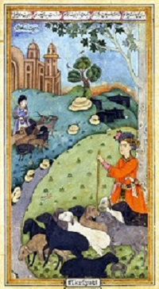
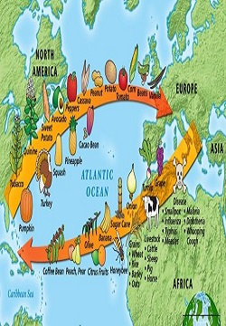
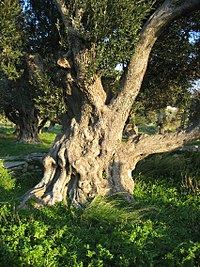

İslam Devrim
İslam tarımsal devrimi 8. yüzyıl'dan 13. yüzyıl-14. yüzyıl'a kadar İslam Altın Çağı olarak bilinen dönemde Arapların tarım ve ziraat alanında yaptıkları bir dizi değişikliktir. Eski dünyaya Arap tüccarların kurduğu küresel ekonomi sayesinde yeni tarım ürünleri ve yeni teknolojiler ulaşmış oldu. Afrika'dan sorgum, Çin'den narenciye, Hindistan'dan mango, pirinç ve özellikle pamuk, şeker kamışı gibi ürünler Hristiyan Avrupa'ya taşındı.

Kolomb Takası
Kolomb takası veya Kolomb değişimi (İng. "Columbian exchange"), ilk defa tarihçi Alfred W. Crosby tarafından The Columbian Exchange adlı kitapında ortaya atılmış bir terimdir.Cenevizli kaptan ve kaşif olan Kristof Kolomb'un ardından bu isim verilmiştir. Terim kısaca Avrupa ve Afrikayı içeren Eski Dünya ile ilk defa Kristof Kolomb tarafından keşfedilen ve ardından kolonicilik faaliyetlerinin başladığı Yeni Dünya arasındaki bitki, hayvan, hastalık, kültür ve teknoloji değiş tokuşunu içerir.

Antik Yunanistan Ve Tarım
Antik Yunanistan'da tarım, ülke ekonomisinin başlıca kaynağıydı. Nüfusun hemen hemen %80'lik bir bölümü çeşitli tarım işleriyle uğraşıyordu.Yunan kentlerinin hemen hepsinde yetişen zeytin halkın günlük yaşamında önemli bir yer tutuyordu. Buna bağlı olarak zeytinyağı üretimi de gelişmişti. Zeytinin yanı sıra topraklarda lahana, soğan, fasulye gibi sebzeler ve pek çok tahıl türü yetiştirilirdi. Sulama, zararlı otları yolma, mahsul toplama, ekin ve hasat zamanları yapılacak her işi köleler yapardı. Pek çok kişinin geçimini sağladığı tarım Yunan kültürün biçimlenmesinde de büyük rol oynamıştır.